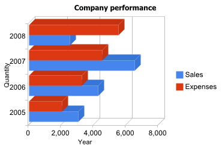

|
A Bar chart displays a series as a set of horizontal bars that are grouped by category. Bar charts are useful for showing data changes over a period of time or for illustrating comparisions among items. Bar Chart Control is an interactive chart, try clicking on a column or on the legend entries.
The user control is really simple, you just need to set one property in order to get the control working.
To show a simple bar chart to illustrate a comparision between Sales and Expenses for certain years, you need just :
- Drag and drop Google Charts Control.
- Set Bar Chart to property named Type.
- Assign to the Data property a variable based on GoogleChartData data type (this SDT is automatically imported when dropping the control to a web form).
- Load the information that will be shown by the chart using a variable based on GoogleChartData.
//Sample code for GoogleCharts
Sub 'LoadGoogleChartData'
&GoogleChartData.Categories.Add("2005")
&GoogleChartData.Categories.Add("2006")
&GoogleChartData.Categories.Add("2007")
&GoogleChartData.Categories.Add("2008")
&GoogleChartSeries.Name = "Sales"
&GoogleChartSeries.Values.Add(3045)
&GoogleChartSeries.Values.Add(4246)
&GoogleChartSeries.Values.Add(6537)
&GoogleChartSeries.Values.Add(2537)
&GoogleChartData.Series.Add(&GoogleChartSeries)
&GoogleChartSeries = new()
&GoogleChartSeries.Name = "Expenses"
&GoogleChartSeries.Values.Add(2045)
&GoogleChartSeries.Values.Add(3246)
&GoogleChartSeries.Values.Add(4537)
&GoogleChartSeries.Values.Add(5537)
&GoogleChartData.Series.Add(&GoogleChartSeries)
EndSub
It looks like :

This implementation is analog to Column chart for more details about adding series, customizing or handling events please refer to Column Chart Control
Bar Chart Control is based on the Google Bar Chart Control
|